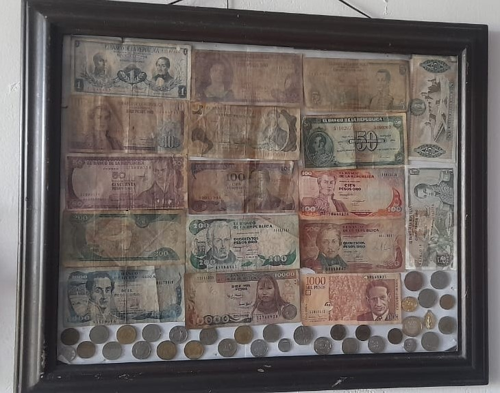
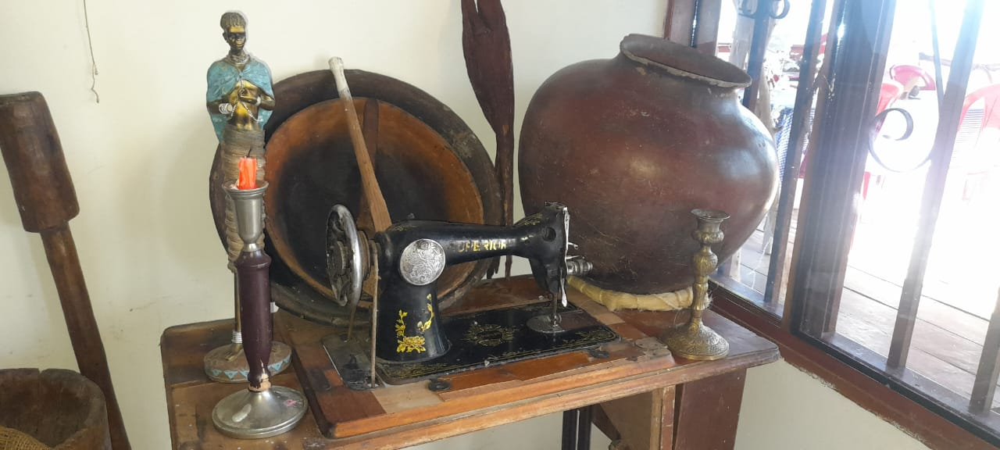
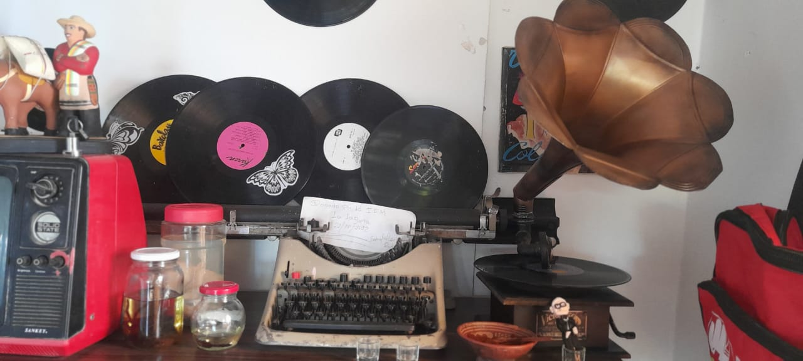

Billetes Colombianos
"Testimonios de Historia y Cultura. Descubre la riqueza visual y simbólica de los billetes que marcaron épocas pasadas en Colombia. Desde las primeras emisiones hasta las evoluciones gráficas, estos billetes cuentan historias de progreso, identidad y patrimonio nacional."
Vajillas Antigüas

"Tesoros de Tradición y Elegancia. Explora la belleza y el refinamiento de las vajillas que adornaron mesas colombianas en épocas pasadas. Cada pieza es un testimonio de la artesanía, el gusto estético y la historia culinaria de nuestra nación."
Piedras Preciosas y Minerales

"Descubre la fascinante diversidad de piedras preciosas y minerales extraídos de las profundidades de la Tierra. Exóticos minerales, cada piedra cuenta una historia única de formación geológica y belleza natural, cautivando a coleccionistas y aficionados por igual."
Reliquias Tecnológicas

"Explora la historia de la comunicación móvil a través de una colección de celulares antiguos. Desde los primeros modelos hasta icónicos dispositivos de décadas pasadas, esta exhibición te llevará en un viaje nostálgico por la evolución tecnológica que ha transformado nuestras vidas."
Hilos del Pasado

"Sumérgete en la historia de la costura a través de una colección de máquinas de coser antiguas. Desde los elegantes diseños de época hasta las innovaciones que revolucionaron la industria textil, estas máquinas cuentan la historia de la creatividad, la habilidad y el ingenio humano a lo largo de los años."
"Explora la evolución de la barbería a través de una colección de máquinas de peluquería antiguas. Estas piezas atemporales no solo representan herramientas de estilo, sino también la habilidad y la creatividad de generaciones pasadas de barberos. Sumérgete en el arte del cuidado del cabello a lo largo del tiempo mientras descubres la historia detrás de estas máquinas icónicas."
"Explora la evolución de la radio a través de una colección de radios antiguos, que cuentan la historia de la comunicación y el entretenimiento a lo largo del tiempo. Desde los primeros receptores hasta los modelos icónicos de décadas pasadas, estas piezas atesoran recuerdos y emociones, recordándonos la importancia de la radio en la sociedad y su impacto duradero en nuestras vidas."
"Sumérgete en la nostalgia del pasado con una colección de reliquias análogas, que incluyen discos, tocadiscos y máquinas de escribir. Estos artefactos atesorados no solo evocan recuerdos de épocas pasadas, sino que también nos recuerdan la belleza y la simplicidad de la tecnología analógica. Desde la música que llena el ambiente hasta las palabras que cobran vida en el papel, estas reliquias capturan la esencia de una era que perdura en nuestra memoria colectiva."Legado Estilístico

Radios Antiguos y su Huella en el Tiempo

Artefactos Análogos
